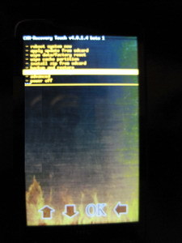

HTC HD2- The most developed phone of all the time, gets another great modification. A senior developer in the XDA-Developer team released the touch enabled version of ClockworkMod Recovery. In CWR, which is installed on all devices, navigation was possible only through the use of volume up / down buttons. In this version, there are some touch buttons on the bottom of the screen for navigation and for making selections. It is currently in the beta version and the stable versions may be released soon.
You can view the original XDA-Developers thread for more information